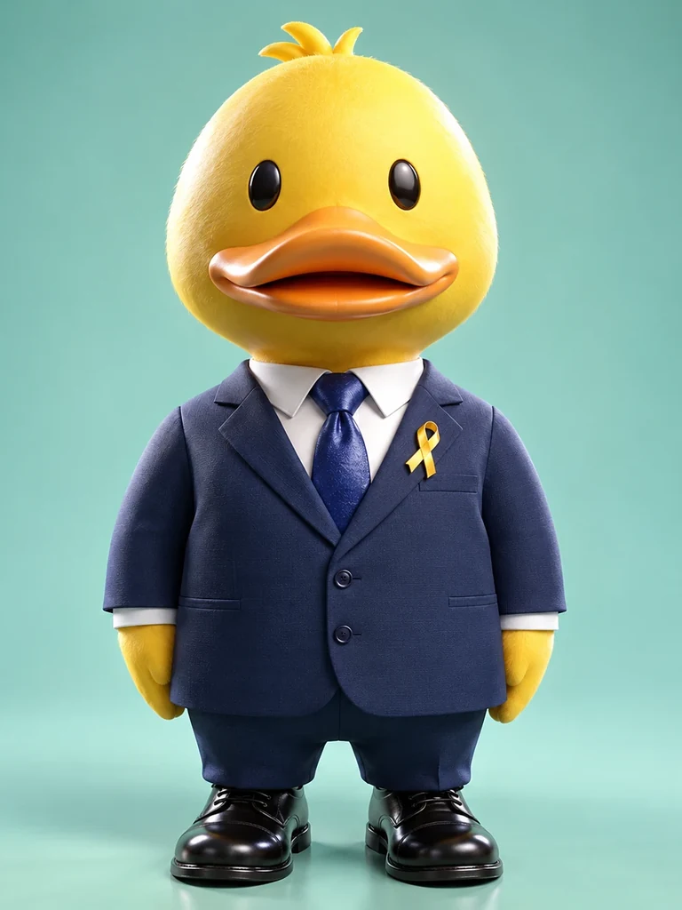

1

형 상오리. 수면 위로는 태연하고 물밑에서는 쉬지 않고 발을 젓는 짐승이다. 화를 내는 것을 본 사람이 없다는 평과 결정이 하루 만에 난다는 평이 한 사람에게 동시에 붙는 까닭이 여기 있다. 위에서 보이는 것은 고요뿐이나 아래에서는 이미 다 끝나 있다.가슴의 노란 리본은 형상이 정해지기 전부터 달려 있었다. 국기보다 먼저 정해진 표식이며, 이 나라에서 가장 오래되었다.
오리는 우는 소리가 짧다. 국가 표어 「오직 추모」 네 글자가 긴 회의 끝이 아니라 툭 던진 한 마디에서 나온 것도 이 형상에 맞는다. 민주시민 대통령
소관국정 총괄 · 최종 결정
이력추모공화국 초대 대통령이자 국가원수. 방장이 곧 국가원수가 되는 이 나라에서, 방을 연 사람이 그대로 나라를 맡았다.
말이 짧은 사람이다. 건국 초기에 남긴 "추모는 나눌수록 배가 됩니다" 한 문장이 국가의 제1원칙이 되었고, 국가 표어 "오직 추모" 역시 긴 회의 끝이 아니라 툭 던진 네 글자에서 나왔다. 국정 방향도 신년사 한 줄로 정해지는 편이다.
최종 결정권을 가졌으면서 그 권한을 혼자 쓰지 않는다. 표결에 부칠 수 있는 안건은 반드시 부치고, 대통령이라 하여 자기 표를 두 번 세지 않는다. 집단지도체제는 누가 요구해서가 아니라 그가 스스로 채택한 것이다.
결정은 빠르고 처벌은 느리다. 건국 이래 닭모이형을 재가한 것이 네 차례뿐인데, 그 넷 모두 국무회의가 먼저 올린 안건이었다. "교정은 벌이 아니라 기회"라는 문장은 헌법에 들어가기 전에 이미 그의 습관이었다.
화를 내는 것을 본 사람이 없다는 점이 여러 차례 언급된다. 재가를 미룰 때도 이유를 길게 말하지 아니하고 안건을 다음 회의까지 그대로 둔다. 국무위원들이 그 침묵을 가장 어려워한다는 말이 방에 돈다. 면전에서 반대 의견을 낸 기록이 여럿 남아 있고, 그 뒤 그가 안건을 고쳐 다시 올린 기록도 나란히 남아 있다.
"추모는 절대 배신하지 않습니다. 성과로 증명되죠."